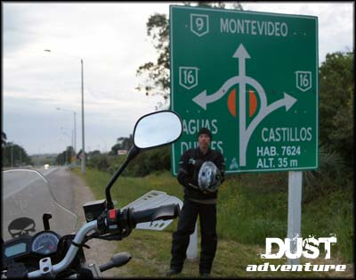
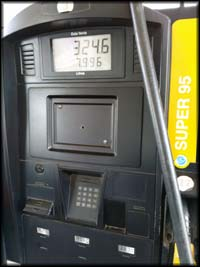
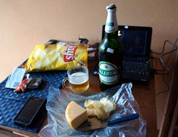

A viagem de moto que fiz até o Uruguai, saindo do Rio de Janeiro, passeando por parte do Sul do Brasil e pela costa do Uruguai teve um roteiro bem solto. Eu ia definindo o que fazer exatamente na véspera, antes de ir dormir. Também me servi de muitas sugestões pelo caminho, do pessoal de hotel, postos de gasolina, e outros viajantes de moto.
Tudo isso teve seu lado bom e o lado ruim, normal. Alguns lugares em que estive, não valeram a pena, e outros que eu nem sabia que existiam me fizeram bem feliz de ter visitado.
Por exemplo, eu já tinha ouvido falar de Bento Gonçalves/RS, apesar de nunca ter tido vontade de conhecer. E acabei parando por lá seguindo a dica de um funcionário da Yamaha de Caxias do Sul/RS. Certamente é um ponto turístico interessante, mas não tinha nada a ver com o tipo de viagem que eu fazia. Era tudo caro, e, fora de temporada, nada encontrei para fazer. Não foi um bom lugar para pernoitar, talvez volte lá em outra oportunidade, com outro ânimo.
Por outro lado, em dado momento eu tinha a intenção de pernoitar em Criciúma/SC, mas cheguei já à noite na cidade, perdido, um trânsito nem tão pesado, mas complicado, com motoristas impacientes, chuva chata... Não consegui muita atenção nos lugares onde parei para perguntar, e na última tentativa, em um posto de gasolina, após não ser levado a sério por alguns frentistas, um deles me sugeriu ir até Nova Veneza/SC, pois lá haveria maior oferta de hotéis. E foi um lugar que me surpreendeu, cidade bonita, bem tratada, restaurantes e hotéis legais. Lá valeu a pena ter parado.
Por onde ir... decidindo a rota na estrada
No Uruguai aconteceu a mesma coisa, mas até lá eu já estava bem escolado e no ritmo da viagem, então consegui evitar paradas equivocadas, considerando os tipos de atrações que eu esperava visitar e vivenciar.
Melhor Época para ir
Quando é melhor ir para o Uruguai? Vai depender dos seus interesses turísticos, o que você pretende fazer. Em novembro começa o verão no Uruguai. Depois de fevereiro o clima vai ficando menos quente e começa a ficar mais frio, iniciando o inverno em junho. Essa temporada de inverno uruguaia vai até o início de setembro, e a temperatura no país começa a esquentar de novo.
Eu fui no verão, então a temperatura estava muito agradável durante o dia, e à noite um clima bem fresco. Tive sorte e não peguei muita chuva, mas o clima é igual ao nosso no Brasil, no verão de vez em quando chove, mas nada que vá atrapalhar os programas durante a viagem.
Como Chegar no Uruguai
São seis cidades no Brasil que tem fronteira com o Uruguai:
- Santana do Livramento x Rivera
- Chuí x Chuy
- Jaguarão x Rio Branco
- Quaraí x Artigas
- Barra do Quaraí x Bella Unión
- Aceguá x Aceguá
As mais movimentadas, e por isso mais indicadas para atravessar a fronteira para fins de turismo, são as que se sai por Santana do Livramento/RS e entra no Uruguai pela cidade de Rivera; ou saindo do Brasil pelo Chuí e entrando na cidade uruguaia do Chuy. Eu conheci as duas opções, e achei a fronteira com Rivera mais organizada, com as cidades mais limpas e urbanas. Isso porque Rivera é um free shop onde você pode aproveitar para fazer compras (limite atual de 300 dólares de compras para trazer pro Brasil sem impostos).
Dentro do meu roteiro final, já realizado, os lugares em que pernoitei acabaram sendo, nessa ordem:
- Sorocaba/SP (casa de parentes)
- Curitiba/PR (R$ 99,00)
- Florianópolis/SC (R$ 100,00)
- Braço do Norte/SC (R$ 45,00)
- Lauro Muller/SC (R$ 40,00)
- Nova Veneza/SC (R$ 60,00)
- Cambará do Sul/RS (R$ 30,00)
- Bento Gonçalves/RS (R$ 79,00)
- Santana do Livramento/RS (duas noites, R$ 55,00 + R$ 60,00)
- Durazno/UY (400 pesos uruguaios)
- Colonia del Sacramento/UY (casa de amigo)
- Montevidéu/UY (duas noites, U$ 40,00 cada)
- Aguas Dulces/UY (duas noites, 700 pesos uruguaios cada)
- Tavares/RS (R$ 75,00)
- Imbituba/SC (R$ 40,00)
- Sorocaba/SP (duas noites, casa de parente)
Desde que saí, até chegar de novo no Rio de Janeiro, foram 20 dias de viagem no total. Em alguns lugares eu dormi por duas noites, e o motivo vou explicar no relato completo de cada dia, nos próximos textos. Mas a estrada principal desta viagem se concentra na BR 116.
Foram pouco mais de 6.500km rodados. Os gastos com gasolina ficaram em cerca de R$ 850,00. Não sei com precisão porque no Uruguai eu pagava no cartão de crédito, então depois a fatura ficou confusa com as conversões de pesos uruguaios para dólar, e de dólar para reais, e na fatura seguinte ainda tem a "diferença de cotação do dólar".
Gasolina para Moto no Uruguai
Segui a orientação de alguns relatos da internet e de motociclistas que conheci no próprio Uruguai, e sempre coloquei a gasolina que eles chamam de Super 95 (e é sem chumbo, ou 'sin plumo'). O preço era o mesmo em todo o país, e quando eu fui custava 40,60 pesos uruguaios por litro.
Abastecimento com nafta Super 95, 325 pesos!
Não percebi diferença alguma no comportamento da moto usando a gasolina do Uruguai (que tem maior octanagem). Nem consumiu mais, nem o motor ficou ruim, tudo normal. Só quando voltei ao Brasil, abastecendo com a gasoolina brasileira misturada com álcool, é que ficou desregulada a marcha lenta do motor, mas foi só regular e tudo certo.
Consumo de Combustível com gasolina uruguaia
Na média a Monstrinha teve um consumo de 27 km/litro. Em alguns momentos, devido aos fortes ventos no Sul do Brasil e no Uruguai, ela chegou a fazer 17 e até 14 km/litro. Mas a média foi 27 mesmo. Só a título de comparação, no uso urbano somente, dentro da cidade, costumo fazer de 30 a 33km/litro, e nas estradas em pequenas viagens fica em 28 ou 29km/litro, porque o motor dessa motoquinha trabalha em um regime de giro bem alto, bebendo mais quando é forçado nas pistas de velocidade alta.
A velocidade média nas estradas, sem vento forte, era de 100 a 110 km/h. Para ultrapassar a moto respondia bem e chegava a 125 km/h. Mas teve pedaços, de novo, por causa do vento forte, que rodei a 60 e a até menos de 40 km/h, controlando a moto para não ser derrubado.
Gastos com Comida
Meus gastos com alimentação também vão soar imprecisos, mesmo porque todas as noites eu bebia algumas cervejas (2 ou 3 latinhas), gasto esse que não é normal para a maioria das pessoas hehehe. Por outro lado, eu poucas vezes almocei, não sentia fome porque durante a viagem na moto não costumo sentir fome. Então meu custo com almoço foi bem pequeno.
Fazendo o backup das fotos e vídeos, sempre com uma boa cerveja para acompanhar...
Em suma, de alimentação, sem incluir as bebidas alcoólicas, eu diria que gastei cerca de 30 a 60 reais por dia, dependendo do lugar onde eu almoçava, lanchava e jantava. Inclui-se aí alguns cafés na estrada, salgados e refrigerantes.
Não cheguei a ir em nenhum supermercado no Uruguai, comprava coisas para levar pro hotel nas pequenas mercearias locais mesmo.
Um jantar mais refinado em Nova Veneza/SC
Pedágios no Brasil e Uruguai
Não fiz o somatório dos gastos com pedágios, que no Brasil são bem extorsivos. Vários pedágios de R$ 5,00, e outros valores vergonhosos. Mas em cada texto referente ao dia de viagem eu vou mencionar o quanto gastei nas cabines cata-dinheiro, acho que anotei quase todos.
Um detalhe bem importante é que em todo o Uruguai, motocicleta não paga pedágio. Não são muitos os pedágios por lá, mas quando chegava na praça de cobrança era só manter na pista da direita, e lá estava a sinalização para a passagem de motos sem cobrança. Muito mais coerente, e não precisava enfrentar aquele ritual de parar a moto, tirar as luvas, procurar a carteira nos bolsos da calça que estava por baixa da capa de chuva, catar o dinheiro, pegar o troco, guardar no bolso, ajeitar a roupa de chuva, colocar as luvas... canso só de lembrar.
Atravessando a Fronteira com a Moto - Seguro
Para entrar com a motocicleta no Uruguai, existe uma pequena burocracia, mas muito tranquila de resolver. É necessário fazer o Seguro Carta Verde. Diria que é como o DPVAT, que a gente paga junto com o IPVA aqui no Brasil. Anualmente, uma moto uruguaia recolhe cerca de 260 reais desse seguro anual. Para nós, que vamos rodar poucos dias, o custo é bem mais alto. Mas como é proporcional à quantidade de dias, é pagável.

Este é o formulário que fica com você, o tal Seguro Carta Verde do Mercosul
No meu caso, fiz o seguro válido por 7 dias, gastando R$ 87,00. Procurei uma corretora de seguros em Santana do Livramento. Achei a Hélio Seguros, mas estava fechada. Fiz na Miguel Moreira, que fica na Rua Uruguai nº 1388. Ele preenche um formulário e uma guia para recolhimento bancário, você vai ao banco, paga essa guia, e volta no corretor, que te entrega uma via do formulário de seguro a ser apresentado com a guia paga caso seja pedido pela Polícia local. Simples assim, é só o tempo dele preencher a papelada, você ir ao banco pagar, e pronto. No texto referente à passagem por Santana do Livramento eu explico mais detalhadamente.
Quanto à documentação da moto, se ela estiver no seu nome, tudo certo, não precisa de nada além do documento normal. Mas se estiver financiada, daí tem uma burocracia com procuração e autorização do banco ou financeira, e coisas do tipo. Fica o alerta, mas tem muita informação na internet sobre o procedimento atualizado quanto aos documentos que precisa no caso de veículos financiados.
Fronteira, Aduana, Imigração
A parte de Imigração e Aduana no Uruguai também foi muito tranquila e fácil pra mim. Entrei por Rivera e saí pelo Chuy. Na entrada fui bem atendido por dois senhores simpáticos, me deram um mapa rodoviário, e me aconselharam quanto ao frio que estava fazendo no interior do país. No Chuy é tudo louco, uma senhora me atendeu, sorriu, tascou um carimbo com data ilegível no meu passaporte e disse que era só isso.
Falando em passaporte, é possível entrar no Uruguai com documento de identidade comum (CNH não serve). Mas prevendo a possibilidade de chegar até lá, eu levei o passaporte, porque minha carteira de habilitação está sempre em dia, mas a identidade foi expedida há muito tempo e poderiam implicar, especialmente porque a minha não tem data de validade, como as emitidas hoje em dia.
Bom, acho que é isso que eu poderia fazer de resumo da viagem no que se refira a gastos, documentação e rota que foi feita.
Para ler o roteiro completo e os detalhes da minha viagem de moto até o Uruguai, comece por aqui: De Moto até o Uruguai - dia 1.